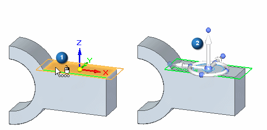
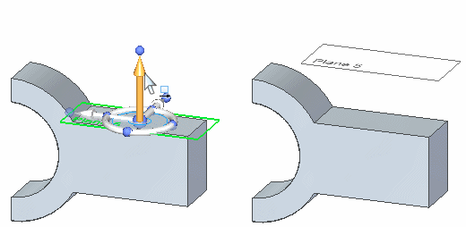
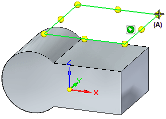

Working with reference planes
A reference plane is a flat surface that is typically used for drawing 2D sketches in 3D space. Although the size of a reference plane is theoretically infinite, it is displayed at a fixed size to make it easier to select and visualize.
There are two types of reference planes:
-
Base reference planes
-
Global reference planes
Base reference planes
The base reference planes are the three orthogonal reference planes at the origin of a new part or assembly document. They define the Top (xy), Right (yz), and Front (xz) principal planes.

You can use the base reference planes to construct sketch-based features. You can also use them to position a part in an assembly or to define the x-axis for a new reference plane you define using a part face. You can display and hide the base reference planes individually or as a group using PathFinder. You can also control the base reference display using the options on the Layout tab of the Customize dialog box. By default, these options are set to show the base reference planes. For more information, see Layout tab (Customize dialog box).
In a synchronous model, the base reference planes are hidden by default. The preferred workflow for starting new parts is to draw on one of the principal planes of the base coordinate system. For more information, see Drawing synchronous sketches of parts.
Global reference planes
When you create global reference planes using one of the reference plane commands in the Planes group on the ribbon, you specify the orientation and position of the new reference plane relative to an existing reference plane or a planar face on a part. For example, you can specify that the new reference plane is coincident to a part face (1).
After the new coincident reference plane is created, the steering wheel (2) and Move command bar are displayed on the new reference plane, in case you want to move the reference plane to a new location.

For example, you may want to move the reference plane to be parallel and offset from the existing plane or face.

You can use global reference planes to construct a complex feature that requires several sketches, such as a lofted feature, or to position a part in an assembly. You can display and hide global reference planes individually.
You can also use global reference planes as a mirror plane when mirroring features.

Resizing reference planes
You can change the size of a reference plane in several ways. You can change the size of the base reference planes by specifying a new size on the General tab on the Options dialog box. The size you specify is applied to all three of the base reference planes. This option is useful when you are setting up custom template files and the default reference plane size is either too large or too small for the types of parts your company typically models.
You can dynamically edit the size of a global reference plane by dragging the reference plane handles (A) located at the endpoints and midpoints of the reference plane. To display the handles for a global reference plane, you click the Resize command on the command bar when a global reference plane is selected.

How do I
Create a coincident reference planeCreate a Coincident Reference Plane (ordered)
Create a coincident reference plane by axis (ordered modeling)
Create a reference plane by 3 points
Create a reference plane by 3 points (ordered)
Create a reference plane normal to a curve
Create a reference plane normal to a curve (ordered)
Create a tangent reference plane (synchronous)
Create a tangent reference plane (ordered)
Create a parallel reference plane
Create an angled reference plane
Create a perpendicular reference plane
Resize a reference plane
Change reference plane name display
Learn more
Reference planes in assembliesExamples: Defining reference plane orientation (ordered)
Look up more details
Coincident Plane command (ordered)Coincident Plane command (synchronous)
Coincident Plane command bar
By 3 Points command
By 3 Points command bar
Normal to Curve command
Normal to Curve command bar
Tangent Plane command
Tangent Plane command bar
Parallel Plane command
Parallel Plane command bar
Angled Plane command
Angled Plane command bar
Coincident Plane By Axis command
Coincident Plane By Axis command bar
Perpendicular Plane command
Perpendicular Plane command bar
Create Reference Plane command bar
Edit Reference Plane command bar
Reference plane command bar
Reference Plane Selection command bar
Resize Plane command
Resize Plane command bar
Show All Reference Planes command
Hide All Reference Planes command